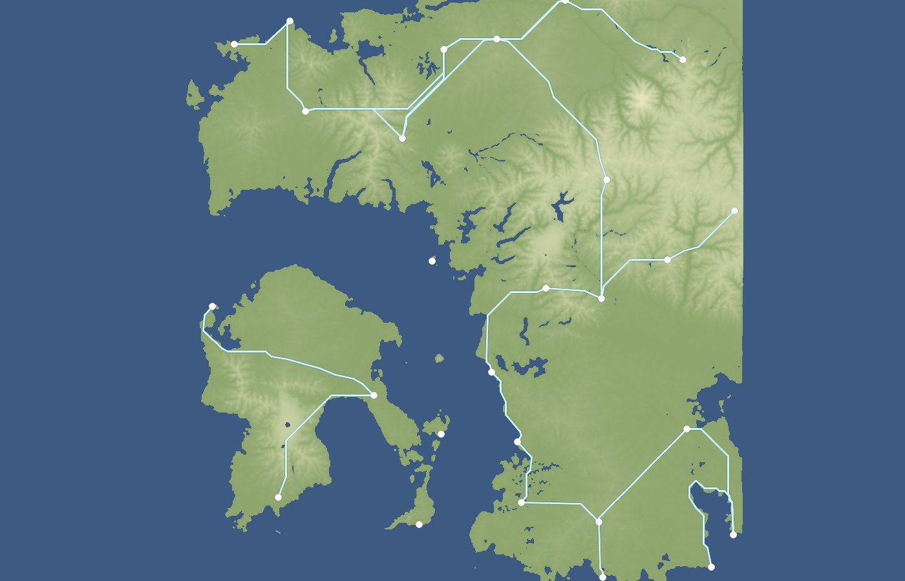
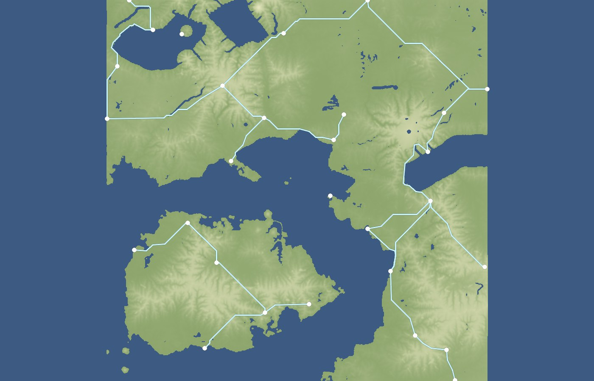

位置づけ: ユーザー指示(11-21 17:27・19:01)の実装。見せ方は後で決めるので、下の絵は確認用の仮です(白い点=魔力の濃い所(結び目)、白い線=つながり)。
概要: 世界にガウス揺らぎの場を作り、その「薄い所」を魔力の濃い所(結び目)とし、薄い所を通る道筋で結び目どうしをつなぎました。これが魔力の地脈です。陸の上だけで、海をまたぐ線は作りません。
結び目/つながり: pm51=29/26、pm52=25/23、pm53=19/17、pm54=27/24、pm55=27/25。同じ種で同じ結果(再実行で一致を確認)。
pm55

pm51

全世界の絵: pm52 / pm53 / pm54。魔力の強さの図(白=強い): pm55。データ: pm55_veins.json
道具: mana_vein.py(python3 -I mana_vein.py <世界dir> <出力の前置き> <種> --min-dist=18 --z=-0.3)